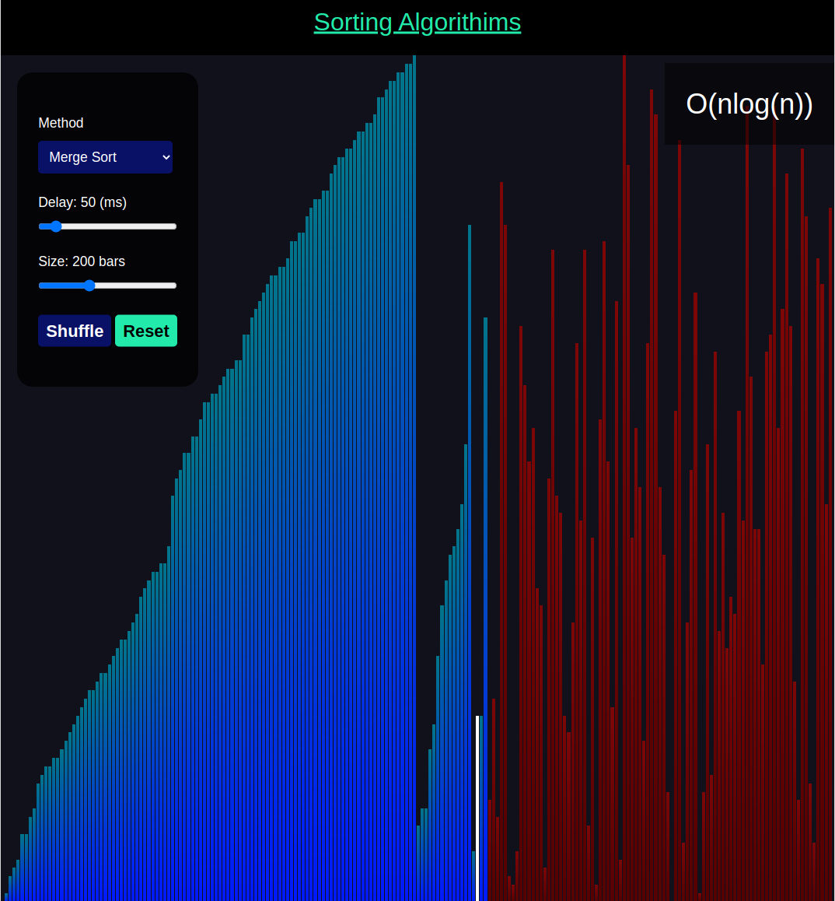
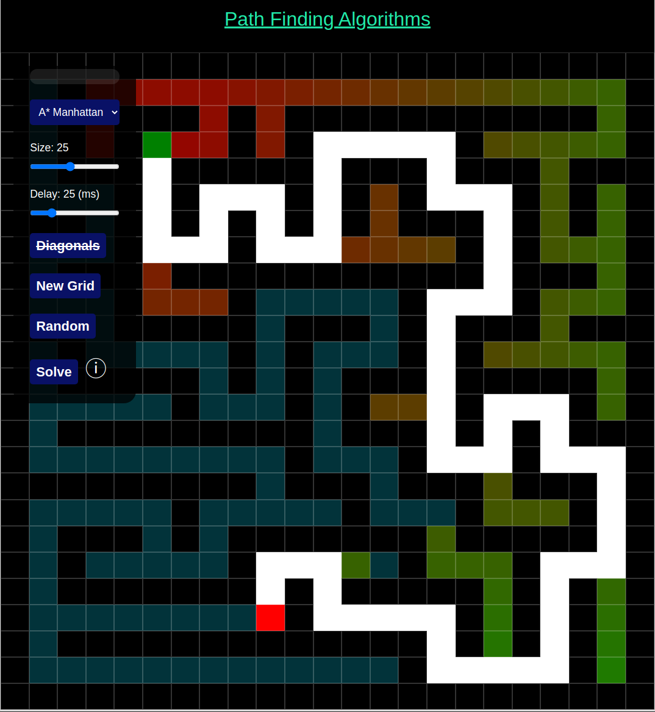

Sorting Algorithms
Visualization of sorting algorithms.
Built using only HTML, CSS, and Javascript.
Algorithms included: Selection, Bubble, Insertion, Heap, Merge, Quick, Pigeonhole, comb, shell, and cocktail.
Go To Visualization 
Pathfinding Algorithms
Visualization of Pathfinding Algorithms
Builts using HTML, CSS, Javascript (inc. jQuery).
Algorithms included: A*, dijkstra, Breadth-first search (BFS), and Depth-first search (DFS).
Go To Tool 
Structure Factor
Computes the Structure Factor and generates LaTeX code to show work.
Uses Javascript to compute and generate code.
Uses MathJax to render the LaTeX code in browser.
Go To Tool
Interplaner Angle
Computes the Interplanar Angle for different lattices and generates LaTeX code to show work.
Uses Javascript to compute and generate code.
Uses MathJax to render the LaTeX code in browser.
Go To Tool